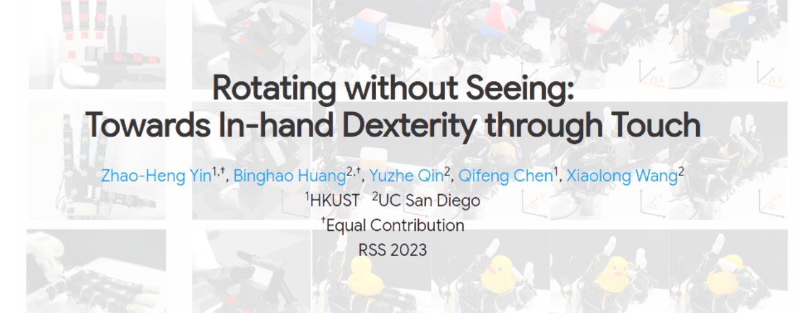
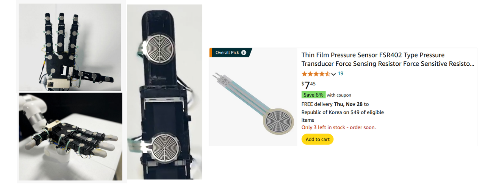

이번 포스팅에서 리뷰할 논문은 Rotating without Seeing: Towards In-hand Dexterity through Touch 입니다. RSS(Robotics: Science and Systems) 2023 학회에서 발표된 해당 논문은 사람이 시각 없이 촉각만으로 손안에서 물체를 정교하게 조작하는 능력을 로봇 핸드에 구현하고자, 손바닥, 손가락 관절, 손끝 전체에 넓게 분포된 저비용의 이진 촉각 센서를 활용하여, 시뮬레이션에서 강화학습으로 학습한 정책을 실제 로봇 손에 적용하고, 이를 통해 학습한 물체뿐만 아니라 학습하지 않은 새로운 물체까지 조작할 수 있는 시스템인 Touch Dexterity를 제안합니다.
Introduction
대다수의 기존 연구들은 점점 더 고품질의 센서를 활용하여 정밀하고 세밀한 접촉을 다루는 데 초점을 맞추었습니다. 하지만 이러한 연구들은 대개 비싼 센서를 그리퍼나 손의 손가락 끝부분에만 부착할 수 있어, 조작기 전체를 감지하지 못한다는 한계를 가지고 있습니다. 이로 인해 수행할 수 있는 작업의 범위가 제한됩니다. 또한 복잡한 작업을 위해 대량의 학습 데이터를 필요로 하지만, 고정밀의 센서들을 사용하는 경우 더욱더 벌어지는 Sim2Real 간의 차이로 인해 시뮬레이터를 활용하기 어려운 문제가 존재합니다.
Touch Dexterity는 물체를 “보고” 조작하는 대신 단순히 접촉만으로 물체를 회전하거나 조작하는 기술입니다. 이 접근법은 손의 한쪽 면(손가락 끝, 링크, 손바닥)에 부착된 저비용의 binary force 센서를 활용합니다. 이러한 센서는 접촉 여부만을 판단하며, 이를 통해 물체의 상태를 “느낄 수” 있게 합니다. 16개의 센서를 조합하면 최대 2¹⁶가지 상태를 표현할 수 있어 강력한 표현력을 가질 수 있고, 또한 Sim2Real 격차는 시뮬레이션을 통해 충분한 데이터를 확보함으로써 해결 가능하며, 이 때 binary 센서는 단순한 구조로 인해 노이즈에 덜 민감하다는 장점이 있습니다.

Amazon에서 약 8달러 정도로 저렴하게 판매되고 있는 FSR 센서를 부착한 모습
Touch Dexterity는 다중 손가락 로봇 손을 사용하여 “보이지 않는” 물체를 x, y, z 축으로 회전시키는 작업에 초점을 맞추고 있으며, 이는 in-hand re-orientation task의 단순화된 버전으로 볼 수 있습니다. 여기서 보이지 않는 물체란 단순히 시각 센서가 없는 것을 의미할 뿐만 아니라, 학습 중에 보지 못한 물체들을 의미하기도 합니다. 강화 학습(RL) 정책은 binary touch sensing 정보와 로봇의 내부 상태를 입력으로 받아 각 시간 단계에서 폐루프(closed loop) 제어를 위한 행동을 예측합니다. 강화학습 Agent는 물체의 3D 구조와 자세를 암묵적으로 학습하여 이를 기반으로 회전을 수행하며 실제 로봇 시스템 테스트에서는 10개의 다양한 물체를 활용하여 실험을 진행했습니다. 아래의 그림은 Unseen 물체였던 오리 인형을 real world에서 in-hand manipulation을 하는 장면입니다.
 Rotate the rubber duck for two cycles without falling, even if it is never presented in training
Rotate the rubber duck for two cycles without falling, even if it is never presented in training
Dexterous Manipulation
기존의 분석적 모델 기반 접근법은 물체와 컨트롤러에 대한 지나치게 많은 가정을 필요로 하여 복잡한 문제로 확장하는 데 한계가 있습니다. 모방 학습(imitation learning)은 주로 시각 입력에 의존하며, proprioception 데이터 내에 포함된 암묵적인 촉각 정보를 통해 물체의 정보를 추론할 수 있지만, 주로 손가락 끝에서의 물체 회전이나 제한된 물체 집합의 회전에만 초점을 맞춥니다. 반면, Touch Dexterity는 촉각 센서를 사용하여 손과 물체 간의 상호작용을 명시적으로 인지하고, 다양한 종류의 물체에 대해 손바닥 위에서의 물체 회전 문제를 풉니다. 이는 복잡한 물체의 움직임을 포함하며, 훨씬 더 도전적인 문제를 다룰 수 있고 학습되지 않은 새로운 물체에 대해서도 일반화가 가능하다는 장점을 가지고 있습니다.
Tactile Robotic Manipulation
What type of touch information is essential?
기존 연구들은 다양한 센서를 활용하여 조작을 지원하기 위해 국소적인 형상 정보(local geometry), 힘과 토크, 접촉 이벤트, 물질 특성을 추출하는 방법을 제안해왔습니다. 심지어 간단한 binary 접촉 신호를 sparse sensor array로 제공받는 경우에도 high-dimensional manipulation task에서 유용할 수 있습니다. 일례로, Shadow Hand에 손바닥에 밀집된 센서 레이아웃을 활용한 연구도 있었습니다.
How can tactile events be simulated to facilitate Sim2Real transfer?
일반적으로 접촉 표면(contact surface)에서 normal & shear tactile force field을 시뮬레이션합니다. 반면, Touch Dexterity는 별도의 시뮬레이션 설계를 요구하지 않고, 기존 물리 시뮬레이터의 내장된 contact 시뮬레이션을 활용할 수 있다는 점에서 효율적이라고 볼 수 있습니다.
Learning Touch Dexterity
논문에서 제안된 Touch Dexterity의 AI 모듈이 학습되는 과정에 대해 살펴보겠습니다.
Tactile Dexterous Manipulation System
Setup
 overview
overview